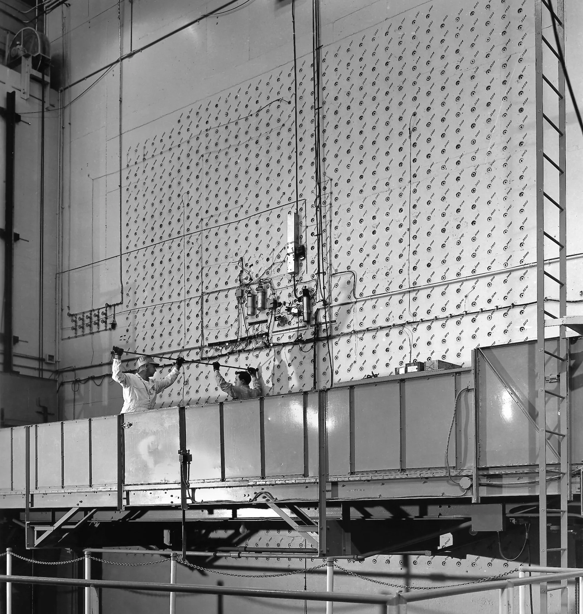
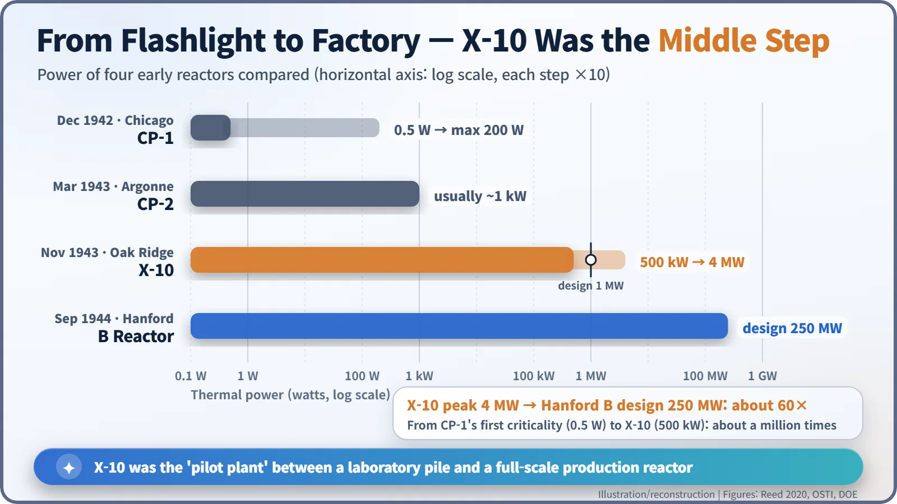
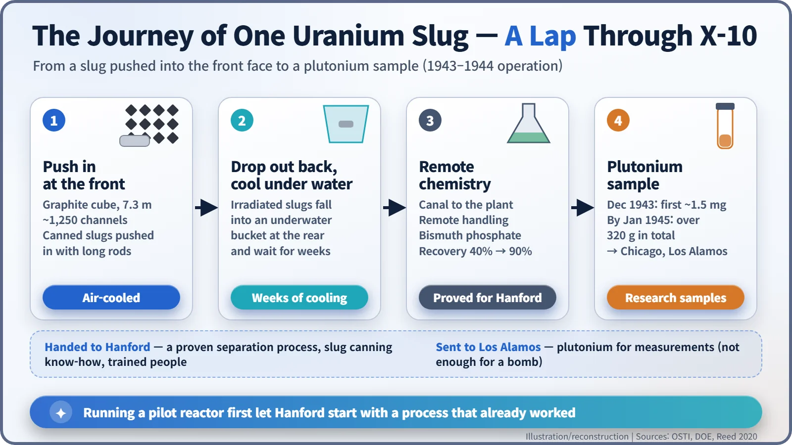
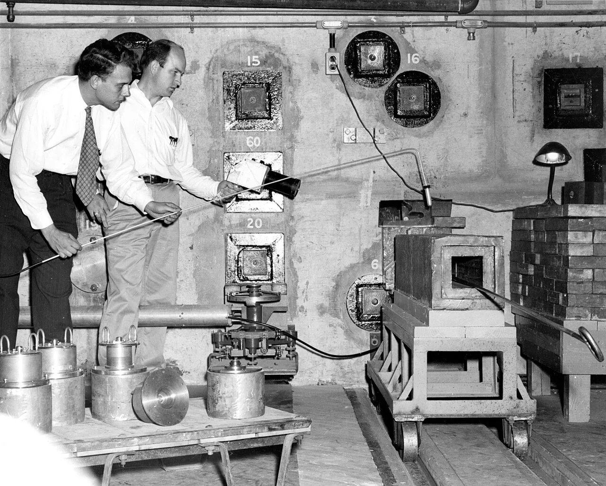
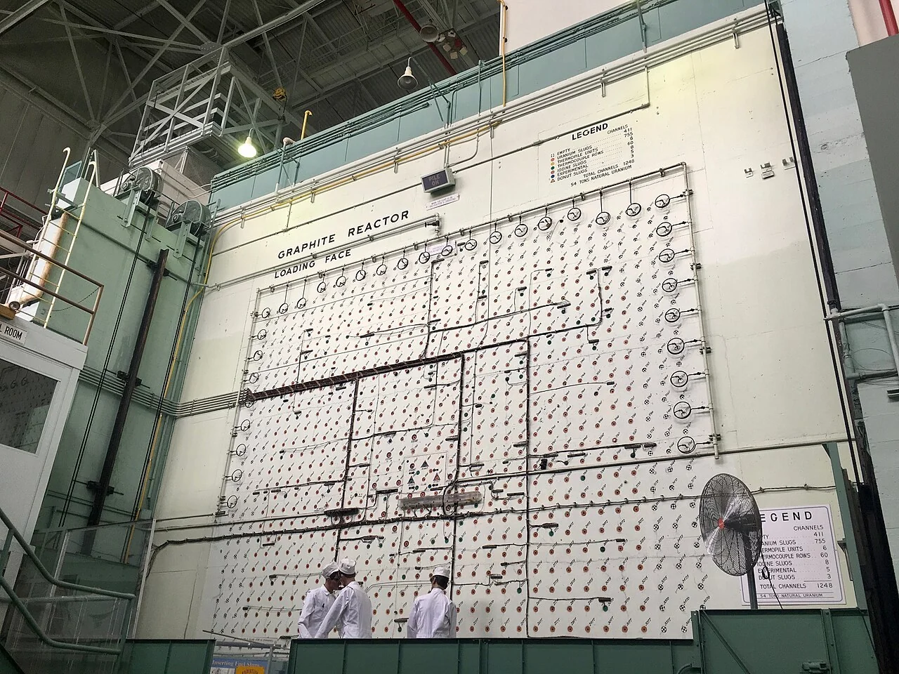

Nuclear History · 107
Build the Pilot Plant First — Oak Ridge's X-10 Graphite Reactor and the First Trial Run of Plutonium (1943)
A pilot reactor in a Tennessee valley made the first plutonium samples and proved the chemistry before the full-scale plant was built.
Before building full-scale plutonium reactors at Hanford, the Manhattan Project built a pilot plant in Tennessee. The air-cooled X-10 Graphite Reactor at Oak Ridge went critical at about 5 a.m. on 4 November 1943, proved the chemistry that Hanford would use, and supplied the first plutonium samples whose behaviour reshaped bomb design. After the war it began shipping radioisotopes to hospitals.
Build the pilot plant first
No sensible manufacturer launches a new product straight onto a full-size assembly line. You build a pilot line first, run it, and find out where the machinery jams before you pour concrete for the real factory. In 1943 the United States applied that piece of industrial common sense to a product nobody had ever made in quantity: plutonium, an element that barely exists in nature. The pilot line was a reactor in a Tennessee valley called X-10.
A seven-metre cube of pencil lead
In December 1942 the first reactor, Chicago Pile-1, had shown that a chain reaction was possible, but at first criticality it ran at about 0.5 watts, roughly the glow of a flashlight bulb. Bomb-scale plutonium would need production reactors running at hundreds of millions of watts, plus a chemical plant able to fish tiny amounts of plutonium out of tons of irradiated uranium. Nobody had ever done either. So before building the full-scale plant at Hanford in Washington State, the Manhattan Project put a mid-sized test reactor and a separation plant at the "X-10" area of the Clinton Engineer Works in Tennessee, today's Oak Ridge. [1] [6]
The chemical company DuPont broke ground in February 1943, and the University of Chicago's Metallurgical Laboratory ran the site as Clinton Laboratories, with Martin D. Whitaker (1902–1960) leading the operating staff. DuPont's Crawford Greenewalt favoured cooling the reactor with air rather than water because it "would be easier to design and quicker to build." [1]
At its heart sat a cube of graphite, the same material as pencil lead, about 7.3 metres (24 feet) on a side. Graphite is a moderator: it slows the fast neutrons released by fission so that they are more likely to split the next uranium nucleus. Around it went roughly 2.1 metres (7 feet) of concrete shielding, and through the front face ran about 1,250 horizontal channels (sources give 1,248 channels or 1,260 positions). [3] [6]

Five in the morning in a Tennessee valley
Fuel loading began on the afternoon of 3 November 1943, and the first slug was inserted by Enrico Fermi (1901–1954), who had led the Chicago pile. A slug was a cylinder of natural uranium metal about 10 centimetres long, sealed in an aluminium can; picture an oversized battery. Loading went on through the night, and at about 5 a.m. on 4 November (one historian gives 5:07), with roughly 30 tons of uranium inside, the reactor went critical, sustaining its own chain reaction. [4] [6]
Careful with the word "first", though. Chicago Pile-1 was the first reactor, and CP-2, the same pile rebuilt in the Argonne woods outside Chicago, had gone critical in March 1943. X-10's accurate title is the first reactor designed for continuous operation. A week after start-up it was running at 500 kilowatts; by July 1944, with bigger fans and improved slugs, it reached 4 megawatts. That is about a million times CP-1's first power, yet only about one-sixtieth of the 250 megawatts Hanford's B Reactor was designed for. X-10 really was the middle step. [6]

The journey of one slug
Running X-10 was surprisingly hands-on. Workers on a lift pushed fresh slugs into the front face with long rods, which shoved the oldest slugs out of the far end into a bucket under water. Inside those slugs, some of the uranium-238 had absorbed neutrons and turned into plutonium-239. After several weeks under water to let the fiercest radioactivity die down, the slugs travelled through an underground canal to the separation plant, where operators extracted plutonium by remote control behind thick walls. [1] [3]
The process under test was the bismuth phosphate process, devised by Stanley G. Thompson at Berkeley. Recovery climbed from about 40 percent to 90 percent in five months, and the same process went on to Hanford. By the end of November 1943 X-10 was producing "small but experimentally-valuable samples of plutonium"; in December the first purified plutonium, about 1.5 milligrams, was isolated. When production stopped in January 1945, as Hanford came on line, X-10 had yielded a little over 320 grams in all. [1] [3] [6]

The bad news a pilot plant is for
The real value of a trial run is finding problems early, and X-10's plutonium did exactly that. Emilio Segrè's group at Los Alamos found that reactor-made plutonium fissioned spontaneously, giving off neutrons, far more often than the cyclotron-made material they had studied before; the Department of Energy's official history simply credits "measurements taken at Oak Ridge." The culprit was plutonium-240, formed alongside plutonium-239, and that discovery would shake up bomb design. One common myth needs correcting, too: X-10 never produced plutonium in bomb quantities. That was Hanford's job. [2]
From weapons work to hospitals
On 2 August 1946, in front of the reactor, the physicist Eugene Wigner handed a small container of carbon-14 to the director of the Barnard Free Skin and Cancer Hospital in St. Louis. It was the first official shipment of a reactor-produced radioisotope for civilian use, and more than a thousand shipments followed in the first year. [5]

A wall you can still visit
X-10 shut down on 4 November 1963, exactly twenty years after it first went critical, and became a U.S. National Historic Landmark in 1965. Visitors to Oak Ridge National Laboratory can still stand in front of that wall of holes. [3] [6]

Because the pilot plant stumbled first, the full-scale plant stumbled less.